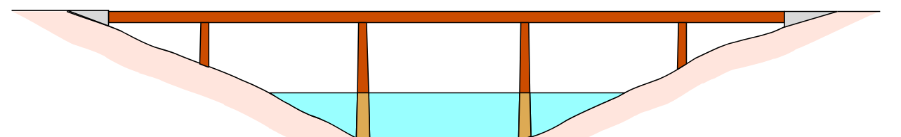
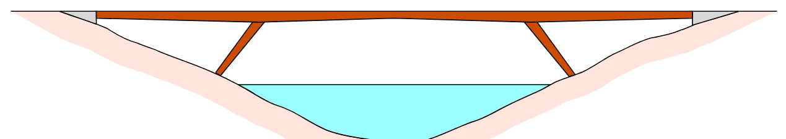
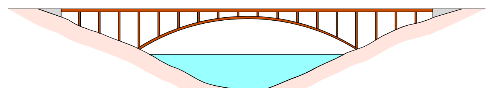
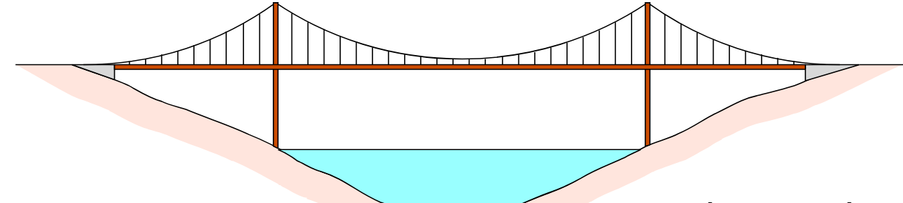

Generlt Info om broer
Bro typer
Bjælke Bro

Bjælkebroer har som bærende hovedelementer et system af bjælker. Bjælkerne kan udføres massivt i træ eller armeret beton, som pladedragere i stål, kassedragere i stål eller armeret beton eller som gitterdragere i stål eller træ.
Der anvendes ikke natursten og murværk. Bjælkebroer dominerer i dag fuldstændig blandt broer med spændvidder fra ca. 15 m op til ca. 150 m, men de største spænd, som er overvundet med denne brotype, er dog væsentlig større:
For betonbjælkebroer med kassedragere således lidt over 250 m, for stålbjælkebroer med kassedragere 300 m og med gitterdragere 549 m. Bjælkebroer med gitterdragere benævnes ofte blot gitterbroer.
Tidligere benyttedes også betegnelsen cantileverbro for en bjælkebro, der var bygget frit frem fra pillerne til fagmidten, dvs. uden stilladsunderstøtninger.
Verdens største Bjælkebroer efter Frie spænd
| Navn | Sted | Frie spænd | Indviet |
|---|---|---|---|
| Guanabara Bay | Rio de Janerio, Brasilien | 300 M | 1973 |
| Neckartal | Stuttgart, Tyskland | 263 M | 1978 |
| Save I | Beograd, Serbien | 261 M | 1957 |
| Gateway | Brisbane, Australien | 260 M | 1985 |
| Zoo | Köln, Tyskland | 259 M | 1966 |
Ramme Bro

Rammebroer minder i deres opbygning meget om bjælkebroer, idet den væsentligste forskel ligger i, at den vandrette brodrager er fast forbundet til lodrette eller skrå rammeben, der fører helt ned til fundamenterne.
En særlig fordel ved anvendelse af rammebroer er, at der opnås en større geometrisk frihed, når de understøttende rammeben kan stilles skråt, mens bjælkebroer nødvendigvis må understøttes på lodrette pilleskafter.
Med skrå rammeben kan man i en række tilfælde tilpasse broens geometri bedre til de lokale forhold, fx hvor man skal passere en dal med skrånende skrænter eller holde en vis fri højde under broen på en del af strækningen mellem broens understøtninger. br
Rammebroer er anvendelige ved de samme spændvidder som bjælkebroer, og de udføres oftest med kassedragere i både rammebjælke og rammeben.
Bue Bro

Buebroer består i moderne udgave af en brobane, der gennem søjler eller hængestænger forbindes til selve buerne, som spænder mellem hovedfundamenterne.
Da buerne, der har form som halvcirkler eller parabler, bliver trykpåvirket, er buebroen særlig fordelagtig for materialer, som kun kan optage tryk, fx natursten med mørtelfuger samt uarmeret eller svagt armeret beton.
Den største eksisterende buebro, New River Gorge-broen i Virginia, USA, med et spænd på 518 m, er dog af stål, mens den største betonbue, Krk-broen i Kroatien, spænder 390 m.
Verdens største Buebroer efter Frie spænd
| Navn | Sted | Frie spænd | Indviet |
|---|---|---|---|
| New River Gorge | Beckley, WV., USA | 518 M | 1977 |
| Bayonne | New York, USA | 511 M | 1931 |
| Sydney Harbour | Sydney,Australien | 509 M | 1932 |
| Krk | Krk-Rijeka, Kroatien | 390 M | 1977 |
| Fremont | Portland, OR., USA | 383 M | 1973 |
HængeBro

Hængebroen kan i en vis forstand betragtes som en omvendt buebro, idet det bærende hovedelement, kablet, ligeledes er krumt, men i en opadkrum (konkav) kurve. Dette medfører, at hængebro-kablerne bliver trækpåvirket, hvor buen er trykpåvirket.
Hængebroer kræver derfor materialer med stor trækstyrke, og i dag benyttes udelukkende kabler opbygget af mange tusinde tråde af stål med særlig høj styrke. Eksempelvis er antallet af 5 mm tråde på Storebælts Østbro 18.648 til hvert af de to hovedkabler, som har en diameter på 85 cm.
I hængebroer placeres hovedkablerne altid over brobanen, som følgelig ophænges i lodrette eller skrå hængekabler, der overfører belastningen til en række kabelklemmer på hovedkablerne, hvis konkave form medfører, at de må støttes højt oppe over brobanen på høje brotårne, kaldet pyloner.
Herudover må hovedkablerne fortsættes i de tilstødende sidefag til fastgørelse i store ankerblokke. Brobanekonstruktionen i hængebroer indeholdt traditionelt gitterdragere, men i nyere tid benyttes mere og mere strømlinjeformede kassedragere.
For at holde vægten nede er brobanekonstruktionen altid udført af stål, mens pylonerne både udføres i stål og beton. I forhold til andre brotyper er hængebroer karakteriseret ved en stor fleksibilitet, hvilket medfører, at de bliver mere vindfølsomme.
Der findes eksempler på, at vindfremkaldte svingninger har ledt til nedstyrtninger, som det fx skete med Tacoma Narrow-broen i staten Washington, USA 1940.
Kabeltrådenes store styrke gør det muligt at spænde længere med et hængebrosystem end med nogen anden brotype. Hængebroer er således de eneste broer, som i dag spænder frit mere end 1 km, og med bygningen af broen over Akashistrædet i Japan (færdig 1998) er man meget tæt på at nå et frit spænd på 2 km, nemlig 1990 m.
Storebælts Østbro har et frit spænd på 1624 m.
Verdens største Hængebroer efter Frie spænd
| Navn | Sted | Frie spænd | Indviet |
|---|---|---|---|
| Akashi Kaikyo | Akashi, Japan | 1990 M | 1998 |
| Storebælts Østbro | Korsør, Danmark | 1624 M | 1998 |
| Humber | Hull, England | 1410 M | 1981 |
| Jiangyin | Yangzhou, Kina | 1385 M | 1998 |
| Tsing Ma | HongKong | 1377 M | 1997 |
| Verrazano Narrows | New York, USA | 1298 M | 1964 |
| Golden Gate | San Francisco, USA | 1280 M | 1937 |
| Höga Kusten | Sundsvall, Svergie | 1200 M | 1997 |